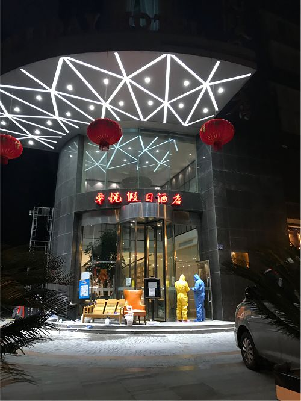
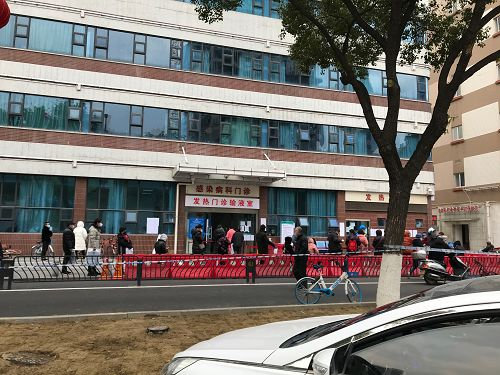
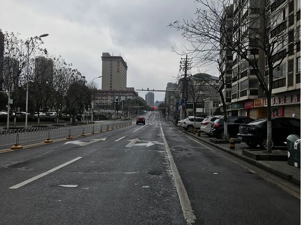
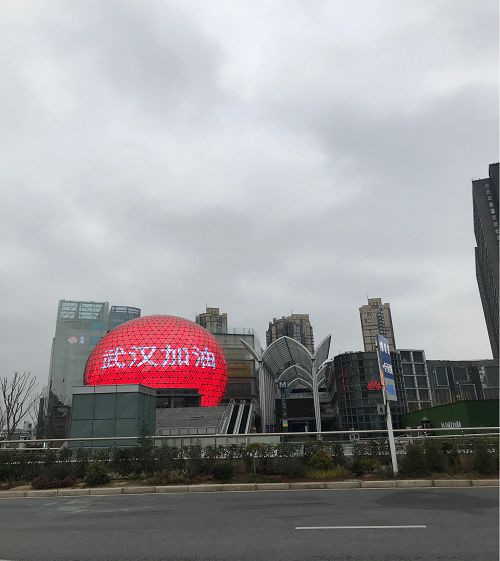
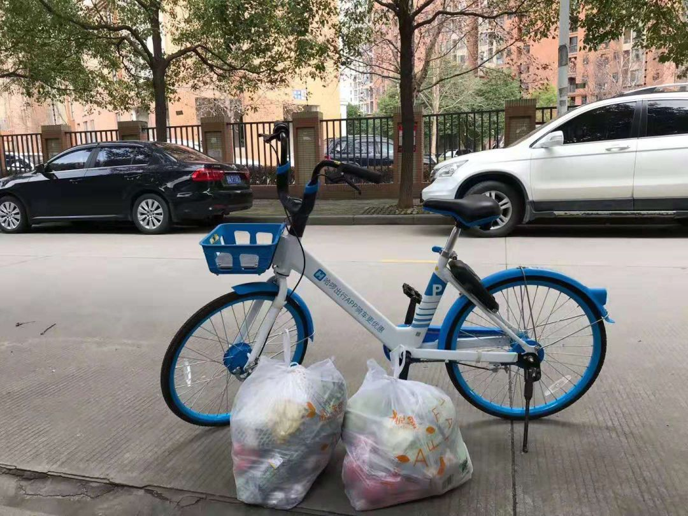
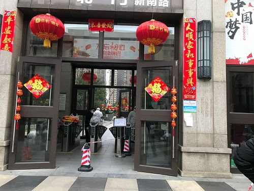
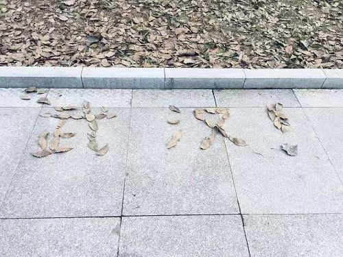

叶青疫区日记：超市的货架要调整
原文链接 备份链接 非常时期，武汉成了全国人民挂念、祈福的城市。封城后，武汉人民的真实生活是什么样？ 正和岛自1月26日起特别推出《叶青：我在武汉疫区的第N天》专栏。叶青是一位定居武汉40年的市民，也是一名学者和官员。接下来的一段时间，他 …

一场新冠肺炎疫情打乱了所有人的生活节奏，医生不眠不休走上抗疫最前线，企业加班加点生产防护物资，民间组织合力协调各方力量，也有热心人力所能及为抗疫出一分力
文｜《财经》记者 马霖
编辑｜余乐
整个春节期间，武汉的街道不再熙熙攘攘，变得清冷安静。辛野是为数不多穿梭于武汉三镇的人，他不是专业外卖员、快递员，但他通过线上骑手平台，自发地为武汉人跑腿采买生活用品。
新冠肺炎这场突发公共卫生事件打乱了所有人的生活节奏，也包括辛野。90后的辛野是内蒙人，在武汉读大学后就扎根在这座城市，职业是健身教练，喜欢看书、看画展，疫情爆发前他每天去西西弗书店读书，已经进入休假模式。
为了阻隔病毒传播，1月23日武汉“封城”，公共交通停摆，人们居家隔离。辛野在不少微信群里看到留言：“出不了门没办法买菜”、“家里有小孩需要看管，奶粉都快吃不上了”，接线上订单的外卖小哥人手也不足。
“我看了心里很难过，我身体好免疫力强，想为武汉人民出一份力，给不能出门的人送上日常用品，总不能饿着。”辛野告诉《财经》记者。他很快下载了骑手软件，电动车充上电，开始了为武汉市民跑腿代购、送菜送药的日子。
非常时期，武汉整座城市和武汉人的状态都发生了很大变化。辛野说，自己可能是武汉现在为数不多、每天过得挺开心的人，“路上的行人里，外卖小哥和我情绪最好。”虽然城市的气氛萧瑟，但是想到今天又帮几个家庭送菜了，心情就会变好。
“本想去火神山医院帮忙”
辛野身体素质好，跑腿送菜之前，他本想去火神山医院建设工地帮忙，联系到医院建设工程部后，被告知参加建设需要会专业工种，比如电焊、水暖，只是有力气、能搬运还不够。“跑腿代购是我力所能及的事。”他说。
疫情之下，很多配送员还没上班，骑手平台上订单爆满，多数无人接单。辛野会筛选出一看就很急需的订单去采买，比如写着“阿莫西林、各种水果、无接触配送”的订单，一些配送员害怕接触感冒病人，这类单子经常很久没人接。“有一次很晚了，药店快关门，我接了这单，跑了几家药店买全了药。”疫情下的武汉，药店开门少，药也不全，买三种药就要跑四五家店，这一单是当天的倒数第二单，辛野当作第一单配送，因为担心药店随时关门。
“还有一单，内容是婴幼儿奶粉、尿不湿、辅食这些，跑腿费不高，没人接，我接了，不能让小孩子没吃的。”
一般骑手会尽量在短时间内接更多单，或者多接顺路单、高价单，辛野说他做这件事的初衷不同，为了凑齐大家需要的东西，他会跑很多店，或者在超市里采买几个小时，基本上一单要买30多样东西。
每单的酬劳不高，20多块钱，晚上吃饭的时候辛野会想：”今天平台和微信加起来跑了七八单，又少了七八个家庭出来买东西，少了七八家感染的可能。”
“封城”以来，武汉变得空旷，经常阴天，时而下雨。对小区和路不熟，加上疫情下很多路和门都封闭了，他经常走冤枉路，迟到了好几次，但大家不会因此有怨言，还叮嘱他路上小心，照顾好自己。最晚一次，他从华师园北路推车十几公里，到家已是12点多。
走在路上的辛野，看到几天前还关着门的酒店，正陆续被征用接纳隔离患者，酒店工作人员“全副武装”。每天经过协和医院和对面的武展方舱医院，一公里内，他都能闻到淡淡的消毒水的味道。这是隔离在家的人无法感受到的武汉。

晚上采买配送结束回家的路上，辛野路过已经被征用为轻症患者隔离点的酒店

路过协和医院发热门诊时，辛野拍下了这张照片，协和是武汉收治新冠肺炎患者的定点医院之一

没有了往日的拥堵，这是武汉最近汽车寥寥的路况

辛野家住在光谷广场站附近，这里是武昌区中心商圈之一，正常情况下一直是人满为患
“跑80公里，只为送一单”
2月7日那天，辛野接触了一个处于隔离期的人，当时他的电瓶车已经没电，赶紧开了辆共享单车，送这一单用了1个小时。2月8日他只跑了一单，下午1点出发，从武汉最东边的光谷骑到武汉最西边的后湖，自行车骑了80公里，回家是晚上8点，后腿已经抽筋了。
2月9日晚他这样记录这一天：“最近太累，早上起晚，没吃早饭就去超市排队了。送了6家菜＋路上带一个拿很多菜不认识的人回家，车没电，我也头痛，饿的不行，回家吃饭了。”
非常时期，武汉还在营业的餐厅很少，他数了下，武昌区自己所居住的片区附近大概有十来家开门，汉口那边开得更少。大超市也并非都开门营业，几家沃尔玛、家乐福、悦活里开了，一个片区内如果有5家武商超市，大概会开一两家，大多数便利店也关门，极少数开着，但没什么东西。
武汉的超市最近一直是三点关门。直到几天之前，超市里还很缺包菜、白菜这些日常菜品，菜也不新鲜，菜价涨幅从30％到3倍不等。辛野说，拉青菜的车从冷库一出来，车上的菜还来不及摆在菜架上，就被一抢而空。一般中午11－12点菜就没了，黄瓜剩下半截半截的，大蒜和生姜剩一些，白菜、小白菜、奶白菜、茼蒿、包菜、生菜、菜苔都没有剩余。
有时候挂面、火腿肠、水饺、汤圆也没有，方便面架子是空的，肉的价格翻倍，排骨要靠抢。“这几天好一些，但是去晚了鸡翅之类的也没有。”84消毒液、酒精等消毒用品则一直很难采购到。
因为缺菜，辛野每天早上会赶十点超市开门去买菜，“尽量给别人带全”，单子上写着“一斤西红柿”，他会把袋子装满，称下来可能有三斤，“菜紧缺，既然带一次，就多带一点。”
大家都在抢菜，甚至是抢别人推车里的菜。辛野要一次买几个家庭的菜，东西多，不能一直推着购物车，他说，经常发生的事情是，去拿菜的时候，称好的肉被拿走了，去拿肉的时候，菜又被别人拿走了。
去超市次数多了，和店员也熟络了。辛野会一次买好几家人的菜，让超市里测体温的姐姐帮忙看着。
晚上11点依然有人点单。“有活的鲈鱼吗？”他回复：“只有冻的鲈鱼要不要？”

这是辛野去超市一次的常规带菜量，足够几个家庭一段时间的伙食

辛野买菜的小粉车，上面贴满了“七龙珠”、“进击的巨人”等动漫贴纸，他说当初专门挑了这个颜色，全武汉可能就这一台，“你见过我的车，就绝望不了。”

电动车没电时，辛野就开一辆共享单车继续送菜
疫情世象万花筒
辛野送菜送货时穿着自己的衣服，很多人都要求辛野把东西放在楼下或门口，所以大部分住户不知道他并不是专业骑手。因为路上不方便去厕所，他尽量忍着不喝水，早上一般9点45分出门，晚上赶在电动车没电之前到家，一般是7点前。
疫情爆发以来，武汉这座城市的气氛，以及武汉人的生存状态都发生了很大的变化。他会感受到了温暖，例如一开始自己戴的是防雾霾口罩，后来有热心的朋友给了他几个防病毒的KN95口罩，“终于有了像样的口罩了”。他也会收到“辛苦了”这样的信息。

保利某住宅楼盘下，保安人员“全副武装”，穿戴防护服、护目镜。辛野说，武汉有这么好防护装备的小区不多，金地、保利等大牌小区装备好，老小区普遍没有保安，大门紧锁

普通小区的门禁


采购路上，辛野拍下的疫情救援车，包括门诊车、物资车、医技保障车，三辆车就是一个临时医院
但他也发现，武汉病了，武汉人的精神状态也没有那么好，“大家感觉没什么希望，没有了朝气蓬勃的、开心的感觉。”
在超市里时间长，超市成了辛野观察人情冷暖的万花筒。多数超市未开门，开业的超市里人手不够，员工大多未到岗，为数不多的在岗工作人员很辛苦，五个人的工作量一个人干，在超市里采购的人又多，超市员工没时间吃饭，没时间上厕所。
“最明显的是，人们更容易激动，情绪更容易爆发了。”他说。在辛野经常买东西的悦活里，人们需要依靠十多台自助结账台结账，但自助结账机经常出问题，即使放了东西在称重台上，称重台也会出现一直报错的情况，发出刺耳的响声，十几台机器由一个阿姨负责解码重置。有一次，一位40多岁的男士扫了几次商品，总是报错，他突然发怒，把台上车厘子等盒装的水果推下台子，撒了一地都是，超市的工作人员和其他购物者都不敢说啥。
辛野觉得，在这样的非常时期，专注于做事，而不是一味发泄情绪，是缓解焦虑的方法。他也不转发“负能量”文章，觉得有些文章会让人越来越偏激，而问题还是问题，得不到解决，他愿意做点实际的事，让武汉人感到一些温暖。
“如果你想做点事，在做好防护的情况下，可以做很多好事，哪怕帮助到一个人也好。”他说，跑腿平台上每天都有医生和家属下单求代买84消毒液、酒精、喷壶，单子多得接不过来，如果是身强体壮的年轻人，你愿意注册骑手，哪怕接一单，也是帮人们解决了一个问题，下楼买菜的时候，可以主动帮邻居里的老人或者孕妇带一点。
另外，很多社区都有确诊、疑似患者，社区人手有限，实在忙不过来，有车的人可以帮社区运输物资，没车的人也可以物资来了帮社区分发，或者主动做给社区消毒的事。“这些事情和在网上转发文章，体现正义感不一样，你能真实地帮到别人。”

一位南京网友给辛野发来用枯树叶拼出的“武汉！”
此时依然是疫情攻坚期，春天还未来到，所有人都在以自己的方式，陪武汉走向新生。辛野说疫情结束后，他最想做的事情是看画展。“清明前后，武汉的樱花也开了，欢迎大家来武汉看樱花。”

▲点击图片查看更多疫情报道
责编 | 蒋丽 lijiang@caijing.com.cn
本文为《财经》杂志原创文章，未经授权不得转载或建立镜像。如需转载，请在文末留言申请并获取授权。
原文链接 备份链接 非常时期，武汉成了全国人民挂念、祈福的城市。封城后，武汉人民的真实生活是什么样？ 正和岛自1月26日起特别推出《叶青：我在武汉疫区的第N天》专栏。叶青是一位定居武汉40年的市民，也是一名学者和官员。接下来的一段时间，他 …
原文链接 备份链接 我住在汉口，是这次疫情的重灾区。那个被查出疫情源头的华南海鲜市场，就在火车站对面，离我家大概20公里。我希望疫情早日结束，对我们国家的经济影响小一些，所有人都能够平安和健康。 口述 | 小 玲 整理 | 沈 林 我叫小 …
原文链接 备份链接 除夕前夜，因疫情蔓延，武汉宣布封城，机场、火车站、市内公共交通停闭，江城困围。封城以来，许多武汉人都承受着分离的苦楚，担心年迈独居的父母买不到菜，惋惜爱人最需要的时却不能陪在身边，常年在外工作的父亲错过仅有的看望孩子的 …
原文链接 备份链接 突发的疫情搅乱了这个春节。武汉封城后，居民被迫留在家中、医护人员无法离开工作岗位，吃饭成了问题。与此同时，餐饮、休闲、商超便利等生活服务业也面临巨大考验。 作为居民和商家的连接点，一群隶属于本地生活服务平台的留守外卖 …
原文链接 备份链接 【编者按】 28日，我们收到了一位名为“尘香”的读者来信，她是武汉人，退休在家，和丈夫、女儿、女婿一起留守在武汉市江汉区：截至2020年1月29日24时，武汉市累计报告新型冠状病毒感染的肺炎病例已达2261例，死 …